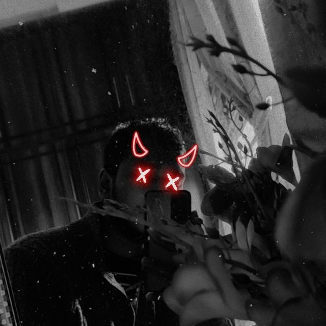

Click robot to close
I'm Talha a passionate developer with experience in Threejs, WebGL, and WebXR development. As a Computer Science student, I've been creating various experiences in web technology including AR and VR. Expertise: Threejs A-Frame React GSAP JavaScript Webflow As a passionate Developer, Your satisfaction is my priority, and I am confident that my work will not disappoint. Kind regards, Talha.